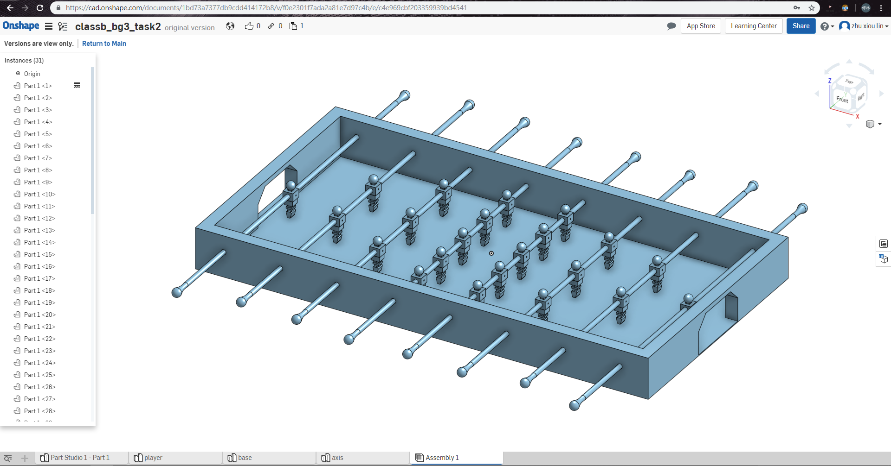
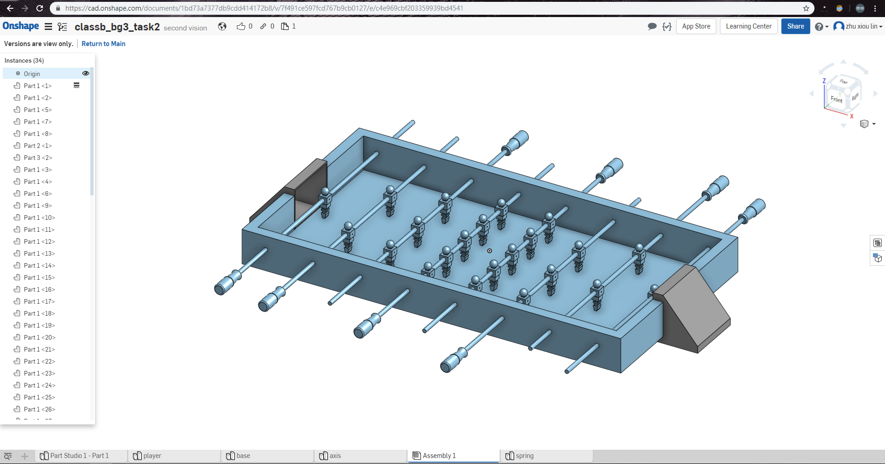

2019.03.22 << Previous Next >> 40423160-5
2019.03.22 << Previous Next >> 40423160-5
40423207-5
3D零組件繪製與組立
我被分配到的工作是，繪製零件Base Axis Spring and Assembly.
First version:
Second version:
Third version:
繪製過程描述
First version
1.按照老師給的plarer尺寸設計Base的形狀與公差。
2.將另一組員繪製的player與我繪製的Base and Axis做組立。
3.與組員討論繪製結果，組員提出無接球機構、把手不美觀、球員移動距離設定不良等問題。

Second version:
1.繪製一個接球容器，加大把手與優化形狀，加長桿子長度。
2.改變plarer約束的距離。
3.繪製完與組員再次討論，我們發現把球取出時會有困難，與最外側人偶應該要多加零件去約束人偶移動距離，同時緩衝對人偶造成的撞擊。

Third version:
1.新增了一個開門機構與固定銷。
2.新增彈簧。
3.立體繪製與組立到第三版本暫時結束，下兩週會往v-rep模擬任務作前進。

2019.03.22 << Previous Next >> 40423160-5